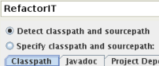
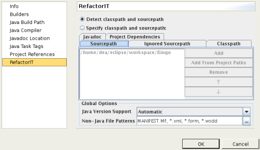

RefactorIT specific project settings are in different locations in different IDE's. Please refer to the subsections for each IDE (JDeveloper, Eclipse, JBuilder and Netbeans) as well as for stand alone version down below to find the exact location.
For RefactorIT to find all the needed files for your project you need to set the Classpath and Sourcepath for your files and libraries. Classpath and sourcepath can be either autodetected or they can be set manually (example screenshots are taken from Eclipse IDE):
Use 'Detect classpath and sourcepath' if you have general project settings and you build and run the project in the IDE. If you build the program outside of the IDE then you might want to use the 'Specify classpath and sourcepath'. The latter will let you manually set the locations but whenever the paths change in your project you will have to update it manually.
The sourcepath should include your project files (.java). If your project uses source files from several directories, you have to add all source files. Do not forget to add the directories at the default package root as well. Use the buttons provided if you choose to manually specify the sourcepath. Below is an example with an example project called Bingo:
The classpath should include the libraries of your project (jar, zip). Note that selecting the directory where the libraries are located is not the correct approach. Instead, add the libraries themselves that are contained in the directory. Use the bittons provided if you choose to manually specify the libraries for the classpath. Below is an example when the library files have been detected automatically:
Using the 'Ignored Source path' tab you can specify packages or filesystems in the source path that are to be ignored. RefactorIT will act as if these items do not exist. This is useful when you need to reduce memory requirements when working with large projects or temporarily hide parseable code from RefactorIT. Ignoring source path items can sometimes make the rest of the code unparseable. One way to solve this is to put the ignored items in the class path as compiled class files.
Any libraries/files/archives that your existing project is sharing with other project can be specified in 'Project Dependencies' tab.
'Javadoc' tab allows you to specify the location on your computer where the files for Javadoc generation are stored.
Under 'Global Options' you can specify the Java version in case you would like to use different version than the default one. Also non-Java file patterns can be specified.
If all source files are compilable and all libraries have been added, you should see a package tree in the left panel of your IDE. If parsing locates errors, it usually implies that a library is missing or some source code is not compilable and RefactorIT cannot compensate for the errors.
To be able to perform refactorings in non-java files you may need to specify corresponding file name patterns.
Use the JDeveloper Project Settings dialog box to set the RefactorIT project specific properties for the active project. To open choose Project|Project Settings and in the RefactorIT section of the settings dialog
To open RefactorIT specific project settings in Eclipse go to Project|Properties in the menu and then choose RefactorIT from the list of items in the left panel.
Use the JBuilder Project Properties dialog box to set the RefactorIT project specific properties for the active project. To open, choose Project|Project Properties, and then select the RefactorIT tab.
Important: In order to work with a project most effectively, a thorough understanding of how JBuilder uses paths and libraries is beneficial. Check the list of references in JBuilder help for more information.
To open Project Options dialog in Netbeans, choose Tools|RefactorIT|Project Options from the IDE main menu or the same command via contextual menus.
To specify Project Options in stand alone version choose Project|Options... from the main menu.
Integrations - overview of integrations offered for RefactorIT
Refactorings - refactorings help section